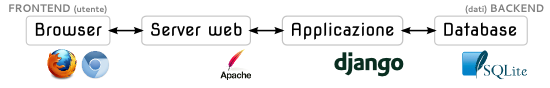

Questo documento fornisce alcuni dettagli tecnici circa i singoli componenti che concorrono a formare il sistema informatico di gestione della biblioteca scolastica dell’Istituto di Istruzione Superiore “G.Curcio”.
Il sistema si serve di un buon numero di componenti software esterni, tutti rilasciati sotto una licenza open-source o free-software. Ognuno di questi mette a disposizione, sul web, documentazione di ottima qualità, che si raccomanda di consultare per qualsiasi evenienza. Anche per questo motivo, si specificano in questo documento solo quelle informazioni riguardanti la specifica applicazione e le modalità di installazione presso la scuola.
Il sistema è costituito da una tipica applicazione web, scomponibile in 4 grandi blocchi:
Tutti i browser più comuni sono stati testati:
(Alcuni standard web non sono completamente supportati da Internet Explorer; questo potrebbe determinare alcune imperfezioni minori nella visualizzazione di alcune pagine in quel browser, che comunque non compromettono mai l’utilizzo dell’applicazione.)
Indipendentemente dal browser, è necessario abilitare Javascript (in genere lo è già, per impostazione predefinita).
Il server web installato sulla macchina server è Apache 2.2. L’applicazione è legata al server attraverso l’interfaccia WSGI realizzata dal modulo Apache mod_wsgi (già configurato).
È possibile sostituire Apache con qualsiasi altro server web (e.g. lighttpd, nginx, etc…); qualora si decida di far ciò, si consulti la relativa documentazione per i dettagli sulla configurazione.
L’applicazione vera e propria svolge tutte le operazioni di acquisizione dell’input e di generazione dell’output. È scritta interamente in Python 2.7, basandosi sul framework Django 1.3.
L’aggiornamento alla versione 1.4 di Django è possibile, ed è compatibile con l’applicazione, ma considerati i vantaggi estremamente esigui che se ne possono trarre, non è un’operazione consigliata.
Django (almeno fino alla versione 1.4) non supporta Python 3. Essendo quindi necessario l’utilizzo Python 2.7, anche tutto il codice dell’applicazione è compatibile solo con tale versione dell’interprete. Non è stato preso nessun accorgimento in preparazione a un port verso la versione 3.
È importante notare come Django implementi un’architettura Model-View-Controller: di conseguenza, il codice è separato in tre diversi “ambiti”, interconnessi in modo non vincolante:
Ogni comunicazione da e verso database avviene esclusivamente attraverso i model e gli strumenti forniti da Django: nessun comando SQL viene direttamente spedito al database. Questo perchè ogni model presenta proprietà, restrizioni e relazioni che devono essere mantenute consistenti dal framework.
L’effettiva memorizzazione dei dati viene effettuta da un software separato, tipicamente un RDBMS, col quale Django comunica attraverso componenti dall'interfaccia comune detti back-end.
Django supporta così tutti i principali RDBMS (e.g. MySQL, PostgreSQL, SQLite …). Il passaggio da un back-end ad un altro si può effettuare tramite la semplice modifica del file di configurazione principale (settings.py).
Al momento dell’installazione si è scelto il back-end SQLite 3: si tratta di un database molto piccolo, leggero, veloce e affidabile che opera su di un semplice file. Quest’ultima caratteristica riduce la generale complessità del sistema e semplifica notevolmente operazioni di backup.
È fondamentale effettuare periodicamente backup dell'intero database, per limitare i danni in caso di perdita dei dati.
Dato che il database è interamente contenuto nel file Biblioteca.sqlite3, è sufficiente copiare tale file presso una locazione sicura o su un supporto di memorizzazione esterno, o in alternativa, utilizzare qualsiasi software per il backup programmato dei file.
Nell'eventualità in cui, durante lo sviluppo, si volesse modificare lo schema del database, si raccomanda di agire sempre nel seguente modo:
Biblioteca.sqlite3)biblioteca/models.pypython manage.py syncdb).Tutto il codice dell’applicazione, compresi i template HTML, è gestito con git ed è raccolto in un repository su GitHub. In questo modo, è possibile lavorare sul codice e successivamente spostarlo in produzione, tenendo traccia delle e modifiche consentendo anche il loro annullamento. Il database non è contenuto nel repository, dato che viene creato durante la prima esecuzione dell'applicazione.
Il sistema è progettato per essere eseguito ed utilizzato solamente da parte di addetti alla biblioteca autorizzati, ed esclusivamente all’interno della rete locale. Non è presente alcuna forma di autenticazione e autorizzazione degli utenti.
Se lo si ritiene opportuno, è possibile configurare il server web per garantire l’accesso solo ad alcuni (o a nessuno) dei nodi della rete.
Nel caso si ritenga utile l’istituzione di un sistema di autorizzazione/autenticazione per gli utenti del sistema, e ci si voglia cimentare nella sua implementazione, si tenga presente che Django fornisce già la maggior parte componenti necessari, con la relativa documentazione.